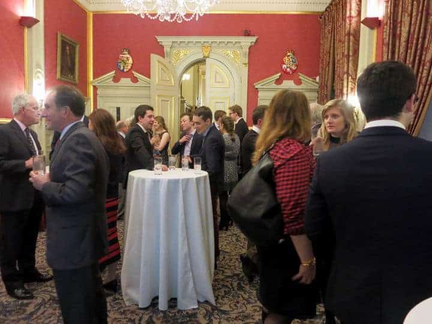

Keep in touch with Oxford and Cambridge sailing via this website if you are a member of the Oxford and Cambridge Sailing Society. Also stay informed of Society social and sailing matters. This includes member personal news and results of University events. The sidebar lists the latest items of news and comment.
Inspect the standard specification of of a team racing Firefly[pdf-link]. This specification aims to assist UK schools, universities, and clubs when they are acquiring new team-racing boats. If you have any queries, use the Secretary link at the bottom of the sidebar to contact us.
GDPR requirements and privacy considerations mean that the Society no longer makes its membership list public. Members wishing to contact another member should get in touch with the Hon Secretary via the link at the bottom of the right-hand column on this page. A list of Olympic honours gained by members is maintained on the Society's Wikipedia page[ext-link] - along with some international honours.
We send out email newsletters regularly during the year. If you are not receiving them, send us your contact details[email-link] and best email address. An archive of newsletters is maintained on this site.
Very recent news is displayed in the sidebar to this page. Browse less recent Oxford & Cambridge Sailing Society news items via the OCSS News and Member News items in the top menu. Use the search box at the top of the sidebar to search news items on title or content. The search function is particularly useful for finding teams and named people in photographs.
Congratulate people on their successes, or make a comment, using the ‘Leave a Comment’ box at the bottom of each news item. Respond to other people’s comments by using the ‘Reply’ link below their comment.
Please submit news of your own and others’ sailing and social activity for publication. Contact the Webmaster using the link at the very bottom of the sidebar. Any news is of interest, particularly photographs. Please also inform us of any changes to your contact details – particularly email address.
Oxford (visit OUYC[ext-link]) runs an active ‘big boat’ yachting section. Cambridge (visit CUCrC[ext-link]) has a strong windsurfing section. Windsurfing at Oxford is a separate club (visit OUWC[ext-link]), as is ‘big boat’ yachting at Cambridge (visit CUYC[ext-link]).
The Society maintains a summary history page on Wikipedia[ext-link]. Historic varsity match information is maintained in this site’s History section. Wikipedia also maintains a good history of team racing[ext-link].

Society members enjoy drinks at the O&C Club in Pall Mall